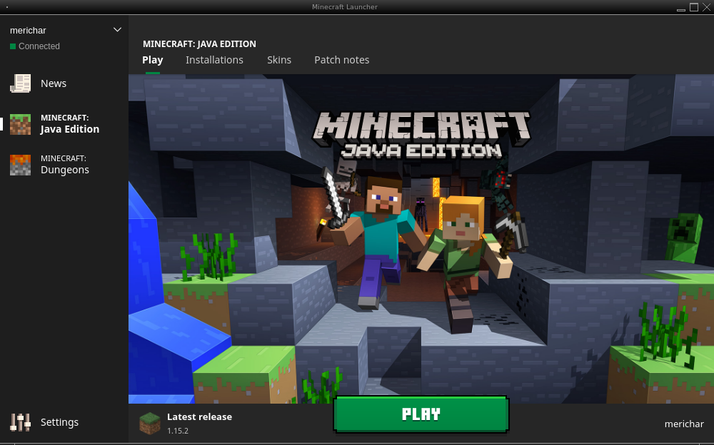
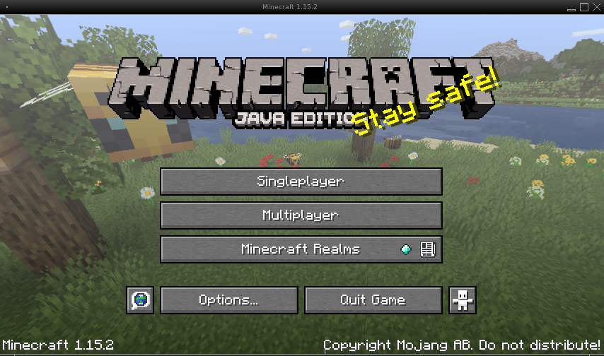
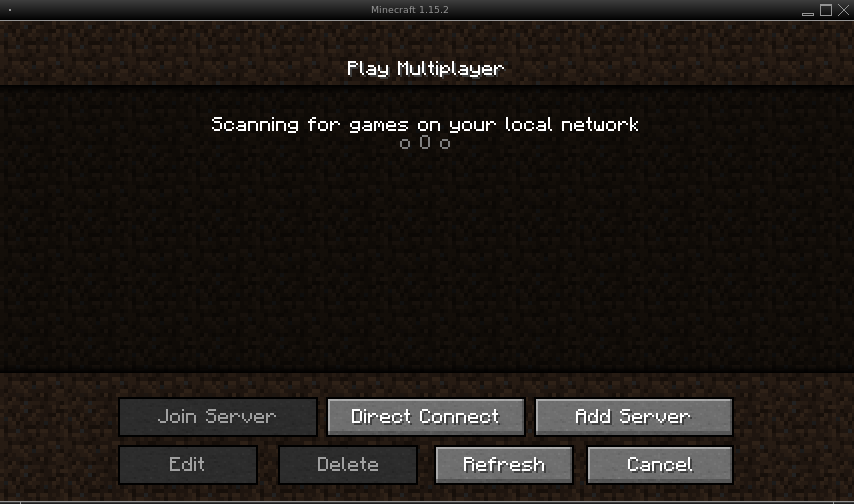
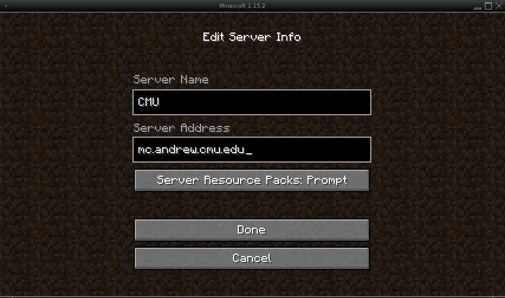
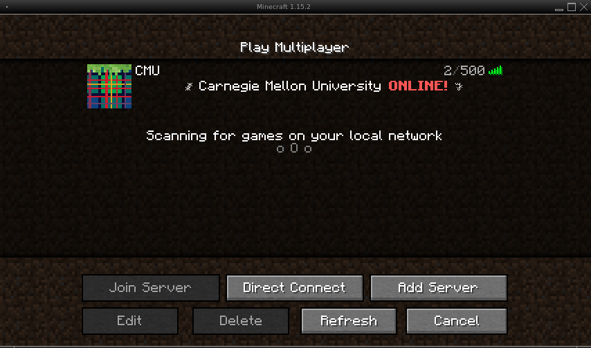
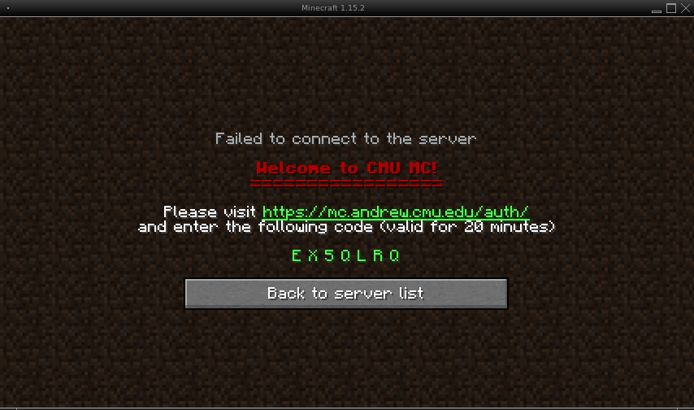
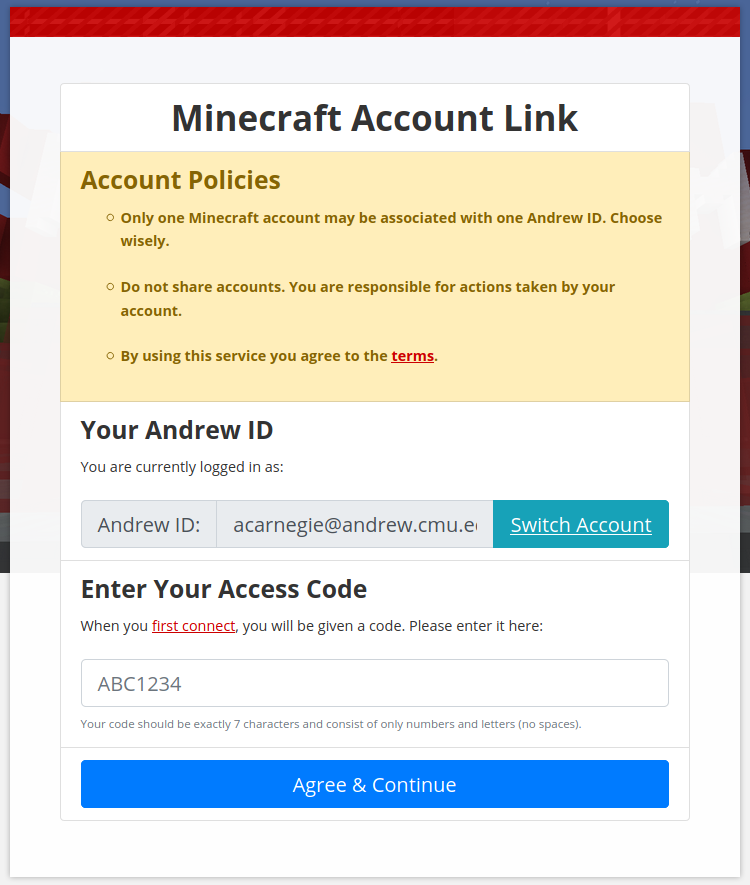
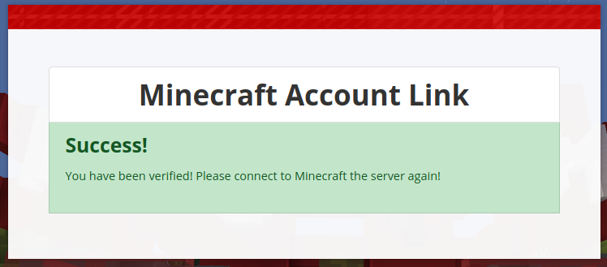

Minecraft Webinar: if you're new to Minecraft, we're offering a "Minecraft for Beginners" webinar on Tuesday, April 14, 2020, at 4:30 p.m. ET. Register on Zoom
Get Started With Minecraft
Before You Start
The Java edition of Minecraft and an @andrew.cmu.edu or @alumni.cmu.edu account are required to sign in to the CMU Minecraft server. If you need an @alumni.cmu.edu email, follow these instructions.
The Server's Address
mc.andrew.cmu.eduConnect in Ten Steps
-
Open Minecraft and press Play.

-
Select Multiplayer.

-
Add a new server.

-
Add the server information. Name it CMU, and for the address, enter
mc.andrew.cmu.edu.
-
Click on the CMU server.

-
Go to the auth address and give your code. The server shows a code that's good for 20 minutes. Enter it at minecraft.alumni.cmu.edu/auth.

-
Link your CMU and Minecraft accounts. Only one Minecraft account can be linked to each Andrew ID.

-
See the confirmation message.

-
Click Back to Server List.
-
Click on the CMU server again. You're in.